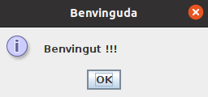
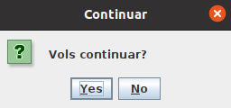
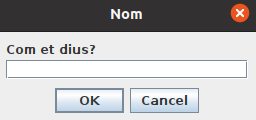
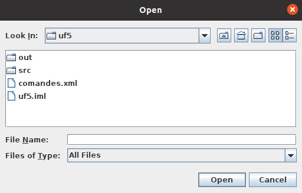
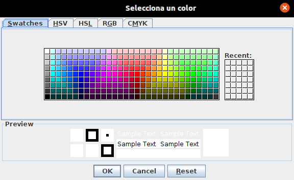

Els diàlegs són finestres associades a l'aplicació però que apareixen temporalment per mostrar algun missatge o demanar dades a l'usuari.
Un diàleg és similar a una finestra però cal tenir en compte algunes diferències importants:
La llibreria gràfica Swing de Java proporciona algunes classes que serveixen per mostrar o demanar informació a l'usuari de forma senzilla.
Aquestes classes es poden utilitzar encara que no sigui una aplicació d'escriptori.
Naturalment, caldrà que el sistema operatiu on s'executi, tingui entorn gràfic.
La classe JOptionPane conté mètodes per mostrar diàlegs senzills per mostrar diferents tipus de missatges i demanar dades a l'usuari.
Es pot canviar el text dels botons afegint el següent codi al principi del programa:
UIManager.put("OptionPane.cancelButtonText", "Cancel·lar");
UIManager.put("OptionPane.okButtonText", "Acceptar");
UIManager.put("OptionPane.yesButtonText", "Sí");
UIManager.put("OptionPane.noButtonText", "No");
JOptionPane.showMessageDialog() serveix per mostrar un missatge.
Centrarà el diàleg en la finestra indicada en el primer paràmetre. Si es posa null, el centrarà a la pantalla.
Per posar salts de línia en el missatge cal utilitzar \n.
Les icones que es poden posar són:
JOptionPane.showMessageDialog(
null, // Finestra pare
"Benvingut !!!", // Missatge
"Benvinguda", // Títol de la finestra del diàleg
JOptionPane.INFORMATION_MESSAGE // Tipus de missatge (icona informació)
);

JOptionPane.showConfirmDialog() serveix demanar confirmació d'una acció a l'usuari.
Té els mateixos paràmetres que l'anterior però afegeix un per triar els botons que apareixeran:
Retorna un valor que indica el botó que s'ha premut (0 és el primer botó; -1 cap botó).
int seleccio = JOptionPane.showConfirmDialog(
null,
"Vols continuar?",
"Continuar",
JOptionPane.YES_NO_OPTION, // Botons YES / NO
JOptionPane.QUESTION_MESSAGE // Tipus de missatge (interrogant)
);
if (seleccio != 0) return;

JOptionPane.showInputDialog() serveix per demanar a l'usuari que escrigui una dada.
Té els mateixos paràmetres que showMessageDialog però mostra dos botons (OK i Cancel).
Si es prem OK, retorna el text indtroduït per l'usuari.
Si es prem Cancel o es tanca la finestra, retorna null.
String nom = JOptionPane.showInputDialog(
null,
"Com et dius?",
"Nom",
JOptionPane.PLAIN_MESSAGE
);
System.out.println("Nom: " + nom);

JFileChooser ref. (Java SE 17)
En realitat, aquests diàlegs no obren ni guarden cap arxiu, simplement retornen una ruta!
Es pot canviar el text de les etiquetes i dels botons afegint el següent codi al principi del programa:
UIManager.put("FileChooser.fileNameLabelText", "Nom de l'arxiu");
UIManager.put("FileChooser.filesOfTypeLabelText", "Tipus d'arxiu");
UIManager.put("FileChooser.lookInLabelText", "Directori");
UIManager.put("FileChooser.saveInLabelText", "Directori");
UIManager.put("FileChooser.openButtonText", "Obrir");
UIManager.put("FileChooser.saveButtonText", "Guardar");
UIManager.put("FileChooser.cancelButtonText", "Cancel·lar");
Per mostrar un diàleg per obrir o guardar arxius, primer cal crear un objecte de la classe JFileChooser.
En el paràmetre es pot posar null o indicar un directori de treball.
Després es pot configurar (per exemple, afegint un filtre) i finalment es mostra amb el mètode showOpenDialog() o showSaveDialog().
Aquests mètodes retornen el valor JFileChooser.APPROVE_OPTION si l'usuari ha premut Open o Save.
Per obtenir la ruta cap a l'arxiu, s'utilitza el mètode getSelectedFile(), que retorna un objecte File.
final JFileChooser fc = new JFileChooser(new File(".")); // Directori de treball
int opcio = fc.showOpenDialog(null); // Mostrar diàleg
if (opcio == JFileChooser.APPROVE_OPTION) {
File file = fc.getSelectedFile(); // Obtenir arxiu seleccionat
System.out.println(file.getAbsolutePath());
}
Es pot afegir un filtre perquè només mostri uns determinats tipus d'arxius:
final JFileChooser fc = new JFileChooser(new File("."));
FileNameExtensionFilter filter = new FileNameExtensionFilter("JPG Images", "jpg");
fc.setFileFilter(filter);
...

JColorChooser ref. (Java SE 17)
Aquest diàleg retorna un objecte de la classe Color si l'usuari ha seleccionat un.
En cas contrari, retorna null.
El tercer paràmetre permet que, inicialment, hi hagi un color seleccionat.
Color color = JColorChooser.showDialog(null, "Selecciona un color", null);
if (color != null) System.out.println(color);
